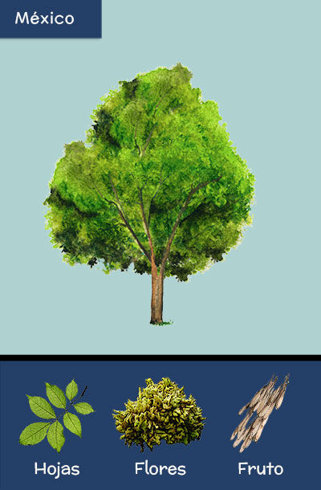
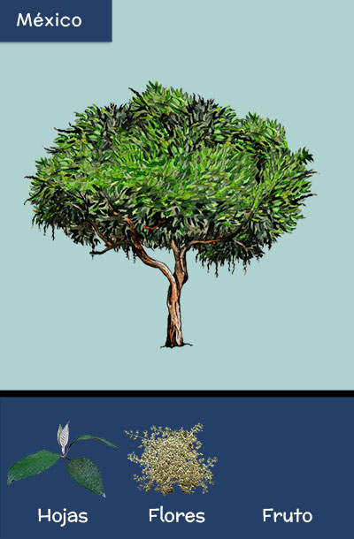

Ahuehuete

Ahuehuete, Ciprés de Moctezuma, Sabino
(Taxodium mucronatum)
Soy un árbol que puede crecer muy alto y muy ancho. Mi nombre significa Viejo del agua, porque crezco a lo largo de los ríos formando bosques ribereños. Vivo en México y en Guatemala y soy el árbol nacional de México. El árbol del Tule en Oaxaca es reconocido mundialmente por su gran tamaño y por su edad de alrededor de 1500 años.
Cedro

Cedro blanco, Teotlate, Ciprés
(Cupressus lusitanica)
Soy pariente de pinos y oyameles, pero nuestras hojas parecen pequeñas escamas. Vivo en los bosques templados de México y Centroamérica. Tengo conos verdes o café rellenos de diminutas semillas triangulares. Mi madera se utiliza para hacer muebles finos, jaranas jarochas y también papel.
Colorin

Colorín o Zompantle
(Erythrina americana)
Soy un árbol pequeño pariente del frijol que vivo en las selvas secas de México, Guatemala y Belice. Soy fácil de reconocer ya que durante el invierno y primavera tiro todas mis hojas y sobresalen mis llamativas flores color rojo intenso y en forma de flamas. Los colibríes las visitan para alimentarse de su delicioso néctar. Mis semillas son frijolitos de color rojo escarlata son muy venenosas y crecen dentro de unas vainas o legumbres.
Fresno

Fresno, Madre de agua
(Fraxinus uhdei)
Soy una de las especies más abundantes en la Ciudad de México. Puedo crecer hasta 20 o 30 metros de altura. Fuera de la ciudad crezco en los bosques ribereños de arroyos y ríos. Mis flores son muy pequeñas, pero seguro reconoces mis semillas que son aladas y que cubren las calles en la primavera. También me puedes reconocer por la disposición de mis hojas: pares opuestos y una sola hoja en la punta.
Guaje

Guaje blanco
(Leucaena leucocephala)
Al igual que el colorín, soy pariente del frijol, y vecino de las selvas secas, pero mis hojas son pequeñitas y mis vainas son de color rojizo. La gente las colecta para cocinarlas y hacer una salsa conocida como guaxmole. De mi nombre guaje, se originó el nombre de Oaxaca, que quiere decir en la punta del guaje.
Izote

Izote, Izotl, Yuca
(Yucca elephantipes)
Soy originaria de las selvas secas, matorrales y bosques de encino de México y Centroamérica. Soy pariente de los magueyes. En mi tronco y hojas le doy abrigo a gran cantidad de animales. Mis flores son blancas y además de ser preciosas son sabrosas. En algunos lugares las preparan capeadas con huevo y con salsa verde.
Palma abanico

Palma de abanico, Palma mexicana
(Washingtonia robusta)
Soy una palmera delgadita pero muy alta. Mis hojas tienen forma de abanico. Vengo de las zonas áridas de Baja California y Sonora en donde formo oasis cerca de los arroyos. A veces mis hojas se quedan colgando y forman una falda. Mis pequeñas flores son blancas y las polinizan los insectos. Mis semillas son oscuras y pequeñitas.
Tepozán

Tepozán blanco, Axixcuáhuitl
(Buddleja cordata)
Soy un árbol pequeño que crezco en bosques de pinos, encinos y en matorrales de México y Guatemala. Mis flores y frutos son pequeños y es más fácil reconocerme porque mis hojas son verdes por un lado y casi blancas por el otro. Desde épocas antiguas se utilizan mis hojas y corteza como remedio para diversas enfermedades.